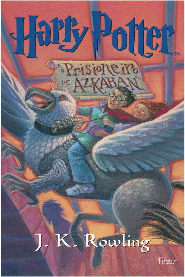

Livro 3
Harry Potter e o Prisioneiro de Askabam
Resumo
Harry volta para a casa de seus tios, os Dursley, onde vê no jornal dos trouxas que um presidiário chamado Sirius Black fugiu. Quando a irmã de seu tio, Guida, os visita e começa a insultar os pais de Harry, ele involuntariamente a transforma em um balão, o que o faz fugir de casa e ser resgatado pelo Nôitibus Andante. Ele viaja até o Beco Diagonal, onde encontra Cornélio Fudge, o Ministro da Magia, que pede a Harry que permaneça no local até o começo das aulas em Hogwarts.
Uma noite antes de voltar a escola, Harry ouve que o fugitivo Sirius Black é um assassino e um dos aliados de Lord Voldemort, e que agora estaria atrás do garoto. No caminho para Hogwarts, um Dementador (criatura que suga almas) embarca no trem e faz Harry desmaiar, porém o novo professor de Defesa contra as Artes das Trevas, Remo Lupin, repele o bicho, ajuda e conta a Harry, Rony, Hermione, Neville e Gina à que os Dementadores iriam guardar a escola numa tentativa de proteger os alunos (e principalmente Harry) de Black.
Mais tarde, na primeira partida de Quadribol do ano, os Dementadores invadem o campo e acabam fazendo Harry desmaiar novamente. Como ele estava a mais de 15 metros do chão, sua vassoura cai no Salgueiro Lutador e é destruída. Após sair da Ala Hospitalar, Harry pede que Lupin o ensine a como combater os Dementadores, e ele o ensina o feitiço do Patrono.
Poster do Filme
Trailer
Curiosidades
- J.K. Rowling começou a escrever o terceiro livro da série enquanto ainda estava promovendo o segundo. Ela teve a ideia de apresentar um personagem importante que seria importante para a história geral da série.
- O livro apresenta o famoso feitiço "Expecto Patronum", que é usado para repelir os Dementadores. Rowling explicou que o feitiço é baseado em uma antiga crença de que cada pessoa tem um animal guardião que protege sua alma. O patrono é a manifestação corpórea desse animal.
- O personagem Sirius Black, que é um importante personagem na história deste livro, tem o nome de uma estrela na constelação de Canis Major (o Cão Maior). O nome "Black" também sugere a ideia de um "cão preto", que é um tipo de fantasma ou presságio na cultura britânica.
- O livro é o único da série a não ter Voldemort como o principal vilão. Em vez disso, o prisioneiro de Azkaban, Sirius Black, é apresentado como o principal antagonista. Rowling disse que queria dar um pouco de folga para Harry e seus amigos antes de trazê-los de volta à luta contra Voldemort nos livros seguintes.